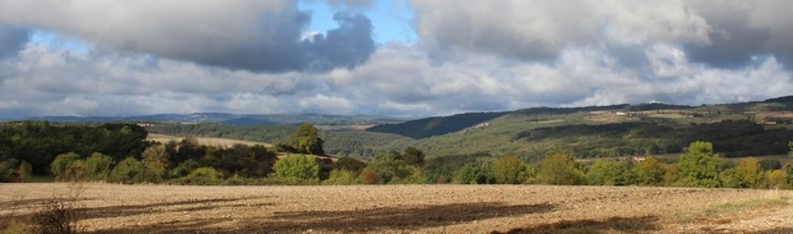
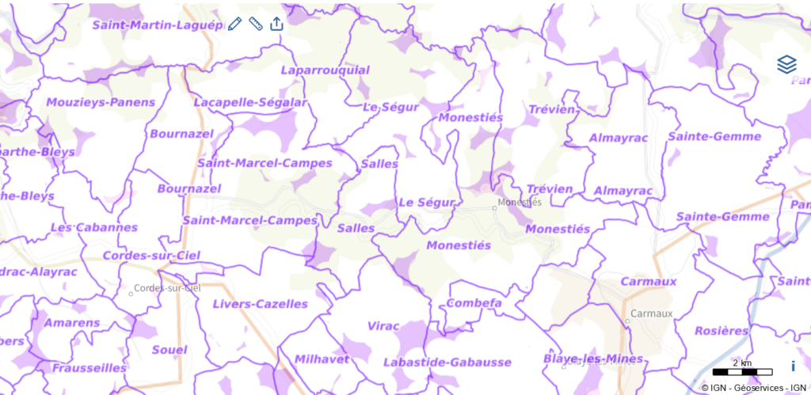
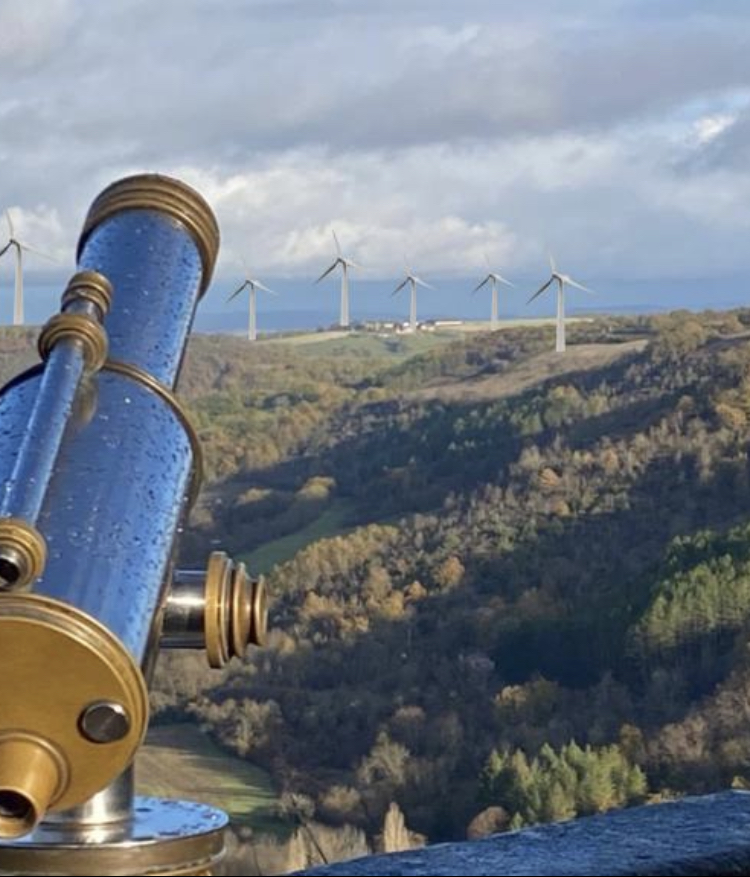
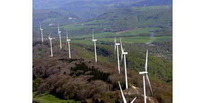

Notre association « Protégeons la Vallée du Cérou dans le Tarn » est mobilisée pour protéger notre cadre de vie de grande qualité, à la fois sur le plan environnemental et humain. Elle lutte donc contre les énergies renouvelables à dimensions industrielles, qui servent d'abord des intérêts financiers privés. Nous soutenons en revanche les énergies renouvelables à taille humaine, et réellement respectueuses de l'environnement.
Amarens, Alos, Bournazel, Combéfa, Cordes-sur-Ciel, Donnazac, Frausseilles, Lacapelle-Ségalar, Laparrouquial, Le Ségur, Les Cabannes, Livers-Cazelles, Loubers, Marnaves, Milhars, Monestiés, Mouzieys-Panens, Roussayrolles, Saint-Benoît-de-Carmaux, Saint-Marcel-Campes, Salles, Souel, Trévien, Vindrac-Alayrac, Virac… tout le territoire est concerné…
Notre vallée fait face à une double menace : éolien industriel et photovoltaïque industriel. Dans les deux cas, ce sont des intérêts financiers privés qui poussent à l'industrialisation de nos territoires ruraux.
Dix ans après le combat des habitants de Milhars, Laparrouquial et Roussayrolles, la vallée du Cérou a été menacée par de nouveaux projets d'éoliennes industrielles, visant notamment les communes de Saint-Marcel-Campes, Salles, Monestiés et Virac. Notre mobilisation a contribué à ce que plusieurs communes rejettent ces projets, mais la vigilance reste de mise.
La pression s'intensifie aujourd'hui autour du photovoltaïque industriel. De nombreux projets d'installation de panneaux photovoltaïques au sol sur des parcelles agricoles, naturelles ou forestières sont à l'étude dans la vallée. Nous avons recensé plus de 100 hectares de projets sur les communes de Virac, Livers-Cazelles, Saint-Marcel-Campes et Saint-Martin-Laguépie. Ces méga-installations, pouvant atteindre plus de 4 mètres de haut et entourées de clôtures grillagées, défigureraient nos paysages pour au moins 40 ans.
La loi APER d'accélération des énergies renouvelables pousse les communes à définir des zones d'accélération pour ces projets.
Le portail géographique des énergies renouvelables de l'État (macarte.ign.fr) montre en violet les zones éligibles à l'éolien (à plus de 500 mètres des habitations). Le photovoltaïque industriel au sol représente une pression croissante supplémentaire sur l'ensemble du territoire.

Pour éviter des visions telles que celles ci-dessous :


Les territoires ruraux de la vallée du Cérou composés de petites et très petites communes, font face aux difficultés d'éloignement des centres urbains :
Pourtant nos territoires offrent un cadre de vie de grande qualité environnementale et humaine, d'autant que leur production agricole contribue à nourrir la France.
OUI à une juste contribution de nos territoires à la production énergétique renouvelable dans le cadre du mix énergétique national.
NON à l'industrialisation et à la marchandisation de nos territoires ruraux pour des enjeux purement financiers et au détriment de leurs habitants, d'une agriculture respectueuse et des milieux à haute valeur et environnementale.
Si des éoliennes industrielles sont construites, elles devront être reliées par une ligne « haute tension » jusqu'à Cordes ou Carmaux, ouvrant la voie à d'autres installations le long de la ligne de crêtes. Si le photovoltaïque industriel s'installe sur nos terres agricoles, ce sont des centaines d'hectares clôturés, des paysages défigurés pour 40 ans, et une agriculture déracinée au profit de la rente énergétique. Dans les deux cas, notre belle vallée sera sacrifiée.
Si nous ne voulons pas voir notre vallée défigurée par les énergies renouvelables industrielles, il est temps de réagir et de tous se mobiliser…
C'est pour cela que l'association Protégeons la Vallée du Cérou dans le Tarn est née.
En savoir plus sur l'association « Protégeons la Vallée du Cérou dans le Tarn »
Votre adhésion renforcera notre voix. Votre cotisation (5 euros, ou plus si vous le souhaitez) nous donnera des moyens pour organiser une résistance active contre ces projets, qu'ils soient éoliens ou photovoltaïques. Pour nous rejoindre, ou simplement vous renseigner, n'hésitez pas à nous écrire à l'adresse
Par notre mobilisation, nous souhaitons amener nos élus à réfléchir ensemble et dire non à l'industrialisation de notre vallée — qu'elle prenne la forme d'éoliennes géantes ou de centrales photovoltaïques au sol — pour une consommation immodérée d'électricité, utilisée ailleurs. Notre association reste ouverte à toutes discussions citoyennes.